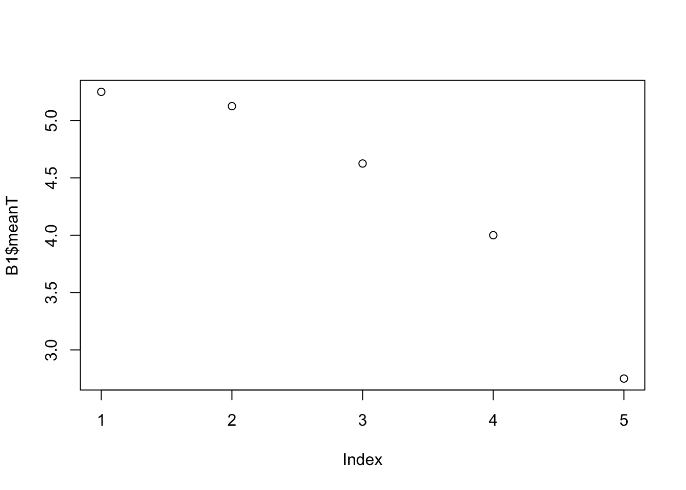

load("~/Dropbox/_R-SCool/_RSCool.B_Website/RSCool_a_web_24/web_RSCool _Aveiro_1/z_Averiro_bases/Ana.Rdata")
B1 <- business_empathy_small Script para criar a base X em R
carregar a BD nova
calcular média por linha
B1$meanT <- ((B1$BE1 + B1$BE2 + B1$BE3 + B1$BE4 + B1$BE5 + B1$BE6 + B1$BE7 + B1$BE8)/8)controlo do calculo da média
B1 BE1 BE2 BE3 BE4 BE5 BE6 BE7 BE8 meanT ID
1 7 6 1 6 1 7 7 7 5.250 1
2 6 6 1 6 4 7 6 5 5.125 2
3 6 3 2 4 4 6 7 5 4.625 3
4 4 4 4 4 4 4 4 4 4.000 4
5 4 4 1 2 1 4 2 4 2.750 5fazer um gráfico de meanT
plot(B1$meanT)
criar uma nova variável levelBE
ifelse(B1$meanT>4,"high","low")[1] "high" "high" "high" "low" "low" B1$levelBE<-ifelse(B1$meanT>4,"high","low")controlar criação de levelBE
B1 BE1 BE2 BE3 BE4 BE5 BE6 BE7 BE8 meanT ID levelBE
1 7 6 1 6 1 7 7 7 5.250 1 high
2 6 6 1 6 4 7 6 5 5.125 2 high
3 6 3 2 4 4 6 7 5 4.625 3 high
4 4 4 4 4 4 4 4 4 4.000 4 low
5 4 4 1 2 1 4 2 4 2.750 5 lowsummary(B1) BE1 BE2 BE3 BE4 BE5
Min. :4.0 Min. :3.0 Min. :1.0 Min. :2.0 Min. :1.0
1st Qu.:4.0 1st Qu.:4.0 1st Qu.:1.0 1st Qu.:4.0 1st Qu.:1.0
Median :6.0 Median :4.0 Median :1.0 Median :4.0 Median :4.0
Mean :5.4 Mean :4.6 Mean :1.8 Mean :4.4 Mean :2.8
3rd Qu.:6.0 3rd Qu.:6.0 3rd Qu.:2.0 3rd Qu.:6.0 3rd Qu.:4.0
Max. :7.0 Max. :6.0 Max. :4.0 Max. :6.0 Max. :4.0
BE6 BE7 BE8 meanT ID
Min. :4.0 Min. :2.0 Min. :4 Min. :2.750 Min. :1
1st Qu.:4.0 1st Qu.:4.0 1st Qu.:4 1st Qu.:4.000 1st Qu.:2
Median :6.0 Median :6.0 Median :5 Median :4.625 Median :3
Mean :5.6 Mean :5.2 Mean :5 Mean :4.350 Mean :3
3rd Qu.:7.0 3rd Qu.:7.0 3rd Qu.:5 3rd Qu.:5.125 3rd Qu.:4
Max. :7.0 Max. :7.0 Max. :7 Max. :5.250 Max. :5
levelBE
Length:5
Class :character
Mode :character
library(Hmisc)
Attaching package: 'Hmisc'The following objects are masked from 'package:base':
format.pval, unitsdescribe(B1[,c("BE1","BE2","BE3","BE4","BE5","BE6","BE7","BE8")])B1[, c("BE1", "BE2", "BE3", "BE4", "BE5", "BE6", "BE7", "BE8")]
8 Variables 5 Observations
--------------------------------------------------------------------------------
BE1
n missing distinct Info Mean Gmd
5 0 3 0.9 5.4 1.6
Value 4 6 7
Frequency 2 2 1
Proportion 0.4 0.4 0.2
For the frequency table, variable is rounded to the nearest 0
--------------------------------------------------------------------------------
BE2
n missing distinct Info Mean Gmd
5 0 3 0.9 4.6 1.6
Value 3 4 6
Frequency 1 2 2
Proportion 0.2 0.4 0.4
For the frequency table, variable is rounded to the nearest 0
--------------------------------------------------------------------------------
BE3
n missing distinct Info Mean Gmd
5 0 3 0.8 1.8 1.4
Value 1 2 4
Frequency 3 1 1
Proportion 0.6 0.2 0.2
For the frequency table, variable is rounded to the nearest 0
--------------------------------------------------------------------------------
BE4
n missing distinct Info Mean Gmd
5 0 3 0.9 4.4 2
Value 2 4 6
Frequency 1 2 2
Proportion 0.2 0.4 0.4
For the frequency table, variable is rounded to the nearest 0
--------------------------------------------------------------------------------
BE5
n missing distinct Info Mean Gmd
5 0 2 0.75 2.8 1.8
Value 1 4
Frequency 2 3
Proportion 0.4 0.6
--------------------------------------------------------------------------------
BE6
n missing distinct Info Mean Gmd
5 0 3 0.9 5.6 1.8
Value 4 6 7
Frequency 2 1 2
Proportion 0.4 0.2 0.4
For the frequency table, variable is rounded to the nearest 0
--------------------------------------------------------------------------------
BE7
n missing distinct Info Mean Gmd
5 0 4 0.95 5.2 2.6
Value 2 4 6 7
Frequency 1 1 1 2
Proportion 0.2 0.2 0.2 0.4
For the frequency table, variable is rounded to the nearest 0
--------------------------------------------------------------------------------
BE8
n missing distinct Info Mean Gmd
5 0 3 0.9 5 1.4
Value 4 5 7
Frequency 2 2 1
Proportion 0.4 0.4 0.2
For the frequency table, variable is rounded to the nearest 0
--------------------------------------------------------------------------------